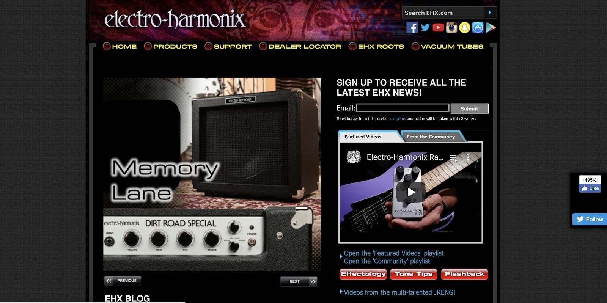
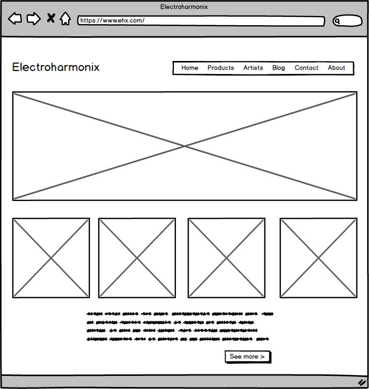
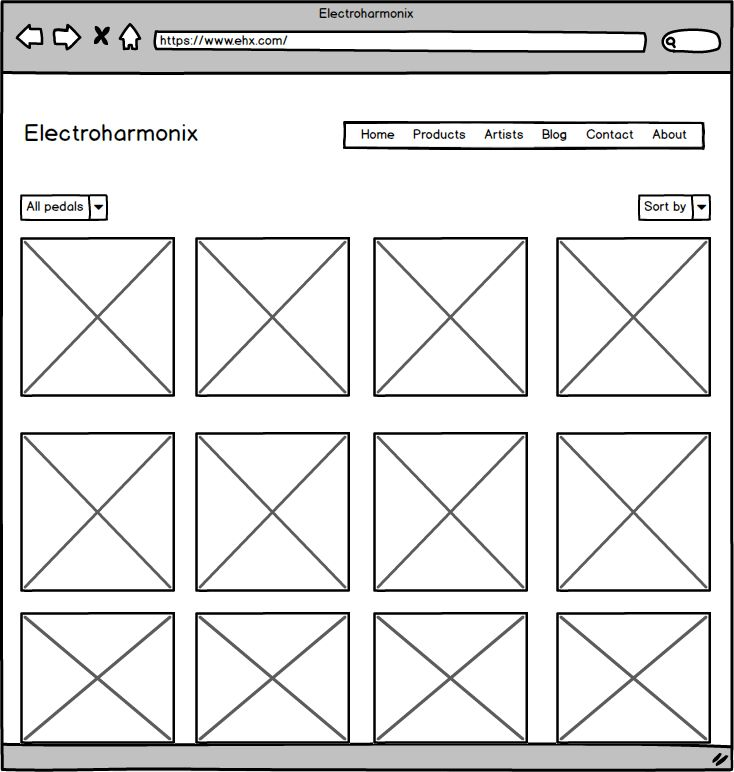
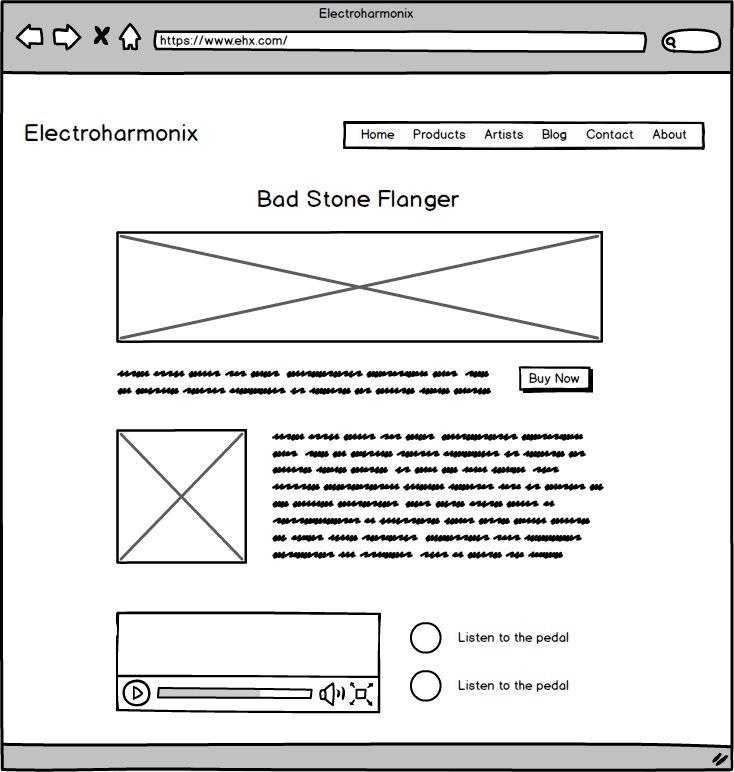
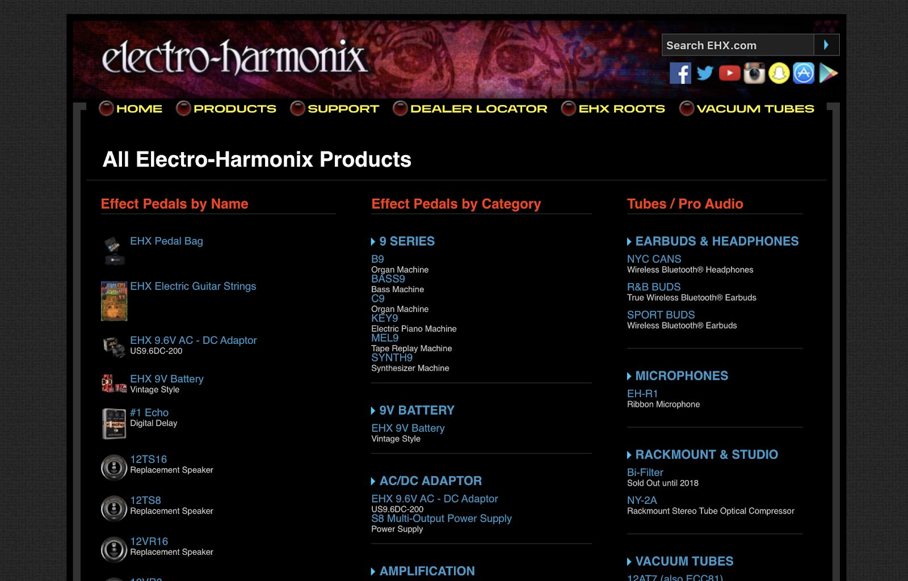
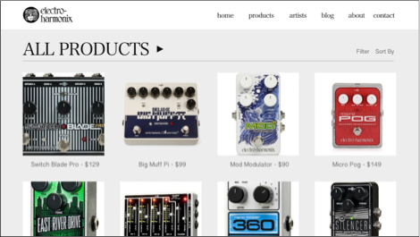
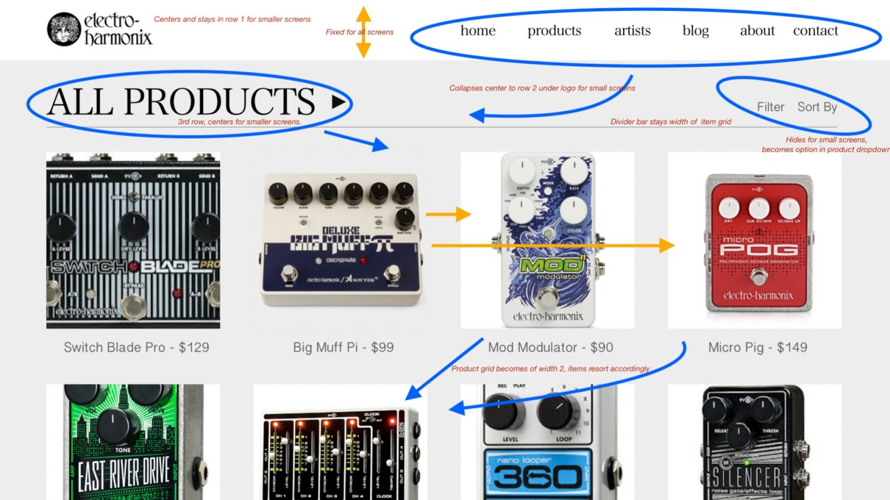
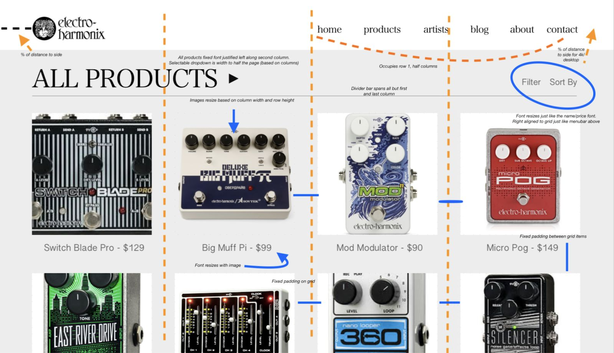

Electro-Harmonix Website Redesign
Electro-Harmonix is one of the leading brands in guitar effects pedals.
Their pedals have been featured in countless hit records since the 70s.
Recently, I was shopping around for a new reverb, and I visited the
Electro-Harmonix website.
I was struck by how primitive and hard to use it was. Particularly compared to other guitar-pedal manufacturers
such as MXR or BOSS, the Electro-Harmonix website feels behind the times.
The website has a lot of information on the brand and seems to be regularly updated
(there is even a section for pictures of individuals with Electro-Harmonix tattoos).
The UI is in dire need of a revamp, however. There is no color or layout consistency, there is too much material
on each page, and finding information on pedals is more difficult than it should be.
I decided to redesign this website for a project in my
User Interface/User Experience class.
Usability Redesign
The current homepage of ehx.com features a huge amount of information including featured products,
the brand’s blog, newsletter advertisements, and scatters buttons for “brand flashbacks” and “tone tips”.
There is too much information. I propose to strip the homepage down to its essentials:
feature some new products, provide some brief text on why.

Electro-Harmonix and perhaps some explanation on the history of the brand.
Electro-Harmonix pedals are intricately decorated and cool looking. Let images of the pedals speak for themselves.
One of the first clickable items on the body of the home page should be a See More or Shop All Pedals button.
Most users come to the website looking for more information on a certain product, and don’t care about the company blog.
The current menu bar for the site is strangely organized. Why does information about EHX Tubes get its own partition on the
website if pedals don’t? In the wireframe below I propose a new set of menu items.

The ‘Products’ item on the menu bar would have a hover dropdown with a few broad categories, the first being pedals (the current site has more dropdown items than fit on my 13” Macbook screen).
Clicking pedals would bring users to a landing page for EHX Pedals. A pedals page might boast about which artists use the product or which records feature
their sounds. Some categories of pedals are presented for further browsing.
Clicking any of the Shop Now or Shop [pedal type] buttons would direct users to a brand catalog — a gridded page with the entire EHX catalog available.
This type of feature is common
to many e-commerce websites (Nike.com for example). Items on the screen dynamically reorganize when the user changes the filters at the top of the page.

Clicking on a specific item on the grid brings the user to a more detailed product page.
This page might have images of the pedal, sound or video clips of the pedal being used, images, product details,
and a direct link to purchase the pedal.

Visual Redesign
One of ehx.com’s biggest weaknesses is it’s aesthetic which looks chaotic and dated.
Here I propose some visual changes which will aid in the visual appeal of the sight as well as the general usability.


Redesign of 'Products' Page
Above is a visual redesign of the product marketplace page. I radically simplified the color palate -
sticking with straight greyscale (could be substituted for other muted tones if the brand wants to stay colorful).
I think the design of the pedals are so intriguing that the page should allow each to speak for themselves. Perhaps each pedal’s individual page
could be themed according to the pedal design (e.g. the Pog page could be red with white accents).
This limited color palette draws more attention to the product.
The new interface also allows for dynamic resorting of the items on the page.
The current ehx.com features long lists of products with tiny thumbnails. It also
features the same products in multiple static lists sorted in different ways (by name, by category).
Modern web tools allow us to build a dynamic graphic interface for products so we can sort on many different axes.
Given that Electro-Harmonix makes a wide variety of products with different ways to categorize them, it makes sense to be able to sort and filter their catalog.
Other more minor visual changes include product grid that is aligned with the menu bar — not the case in the current design.
Responsive Redesign
The current ehx.com is not a responsive website, meaning that the UI does not change when you visit
on a different sized screens. Responsive websites are the norm today, and my proposed
redesign would incorporate this feature.
Below I give two sketches detailing the responsive adjustments
made when switching between screens in the laptop desktop range.
The main adjustment made between the two different displays is the stacked logo/menubar
and the 4-width grid on the larger displays verus a 2-width grid on the smaller displays.

